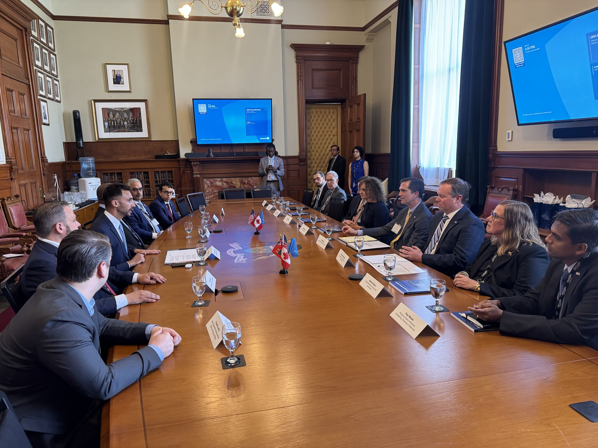
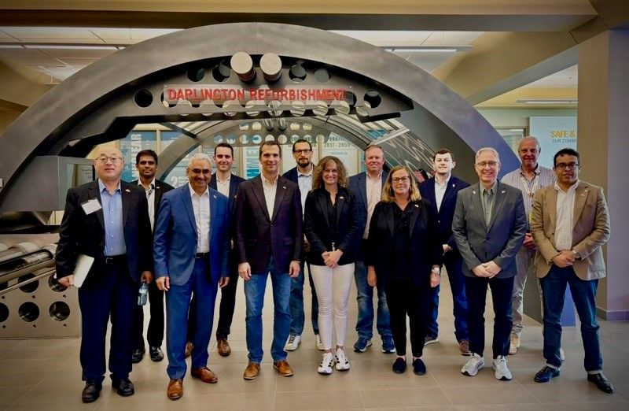
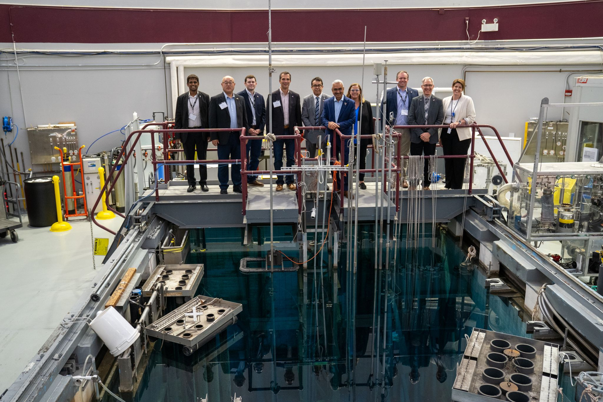

Dr. Moses was part of an Oklahoma delegation consisting of state government officials, academia and industry meeting with Canadian Ontario government officials to discuss nuclear energy infrastructure. Thank you to Jad Badwal (Ontario Agent General), Daniel Guzman (Trade Officer Ontario at the Consulate General of Canada), Chris Schinnerer (Deputy Secretary of Energy and Environment State of Oklahoma) and Jeff Starling (Secretary of Energy and Environment State of Oklahoma) for organizing this trip.

The visit started with meeting the Ontario Government's Minister of Energy and Mines, Stephen Lecce. Following this, insightful presentations from Nuclear Waste Management Organization (NWMO), Westinghouse Electric Company, Organization of Canadian Nuclear Industries (OCNI), and BWXT—spotlighting cutting-edge innovations in nuclear energy, with a strong emphasis on Small Modular Reactors (SMRs) and life-saving medical isotopes.

Thanks to presenters Lisa Frizzell, Brian Fehrenbach, Agata Leszkiewicz and Jacqueline Cherevaty. The visit to Ontario Power Generation (OPG) offered a firsthand look at the new SMR site showcasing OPG’s dominance in shaping the future roadmap of nuclear energy. Our visit to GE Vernova Hitachi Nuclear Energy showcased cutting-edge work in clean energy technologies, and the virtual reality tour offered a dynamic, immersive look into their advanced nuclear solutions.
Finally, McMaster University gave a tour of their pioneering role in nuclear innovation, especially in the field of medical isotopes. Home to Canada’s most powerful research reactor and the country’s only major neutron source, the McMaster Nuclear Reactor (MNR) has been a cornerstone of discovery since 1959.
